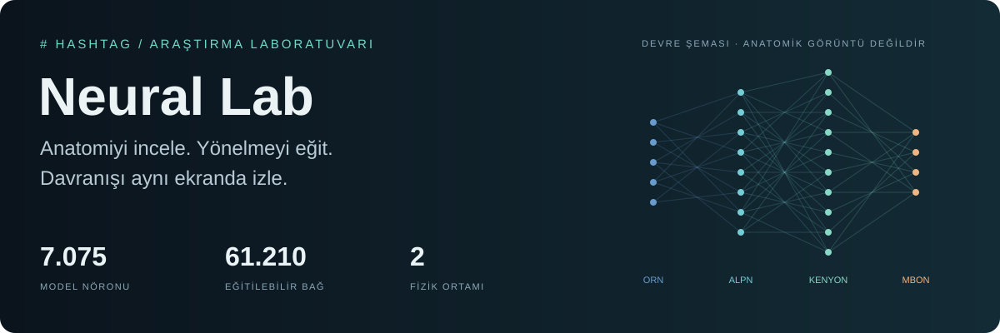
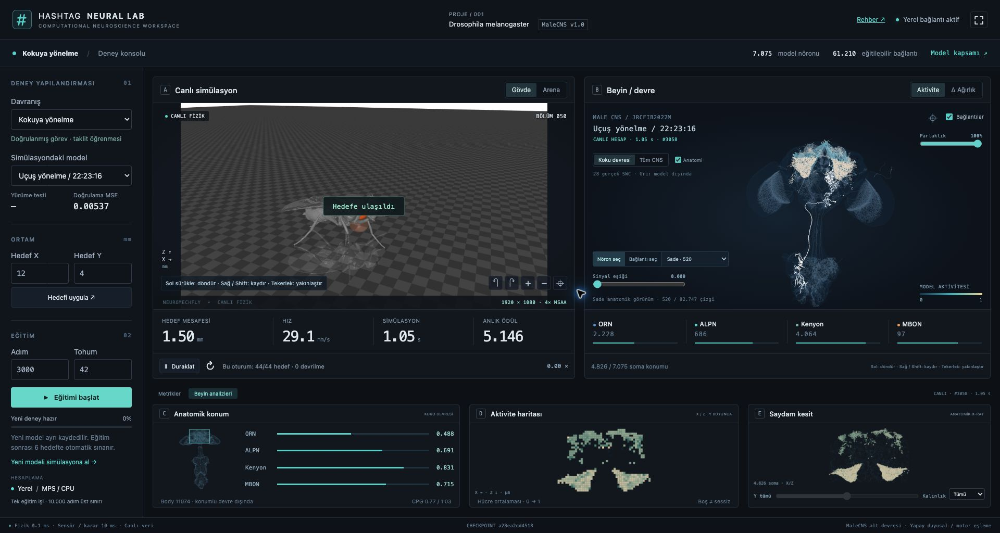
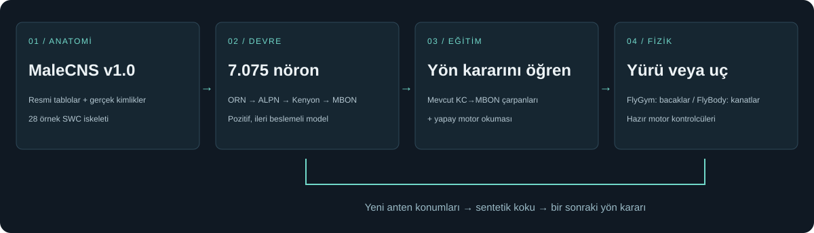
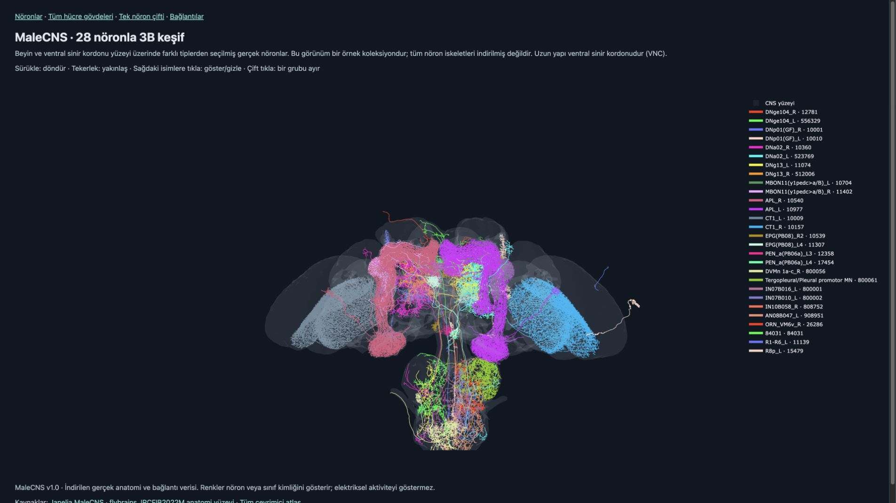
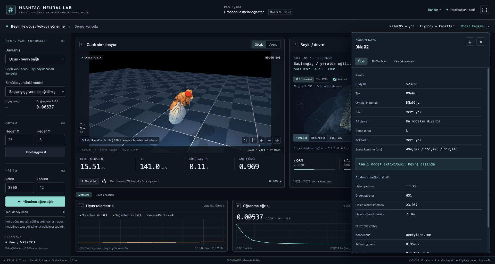
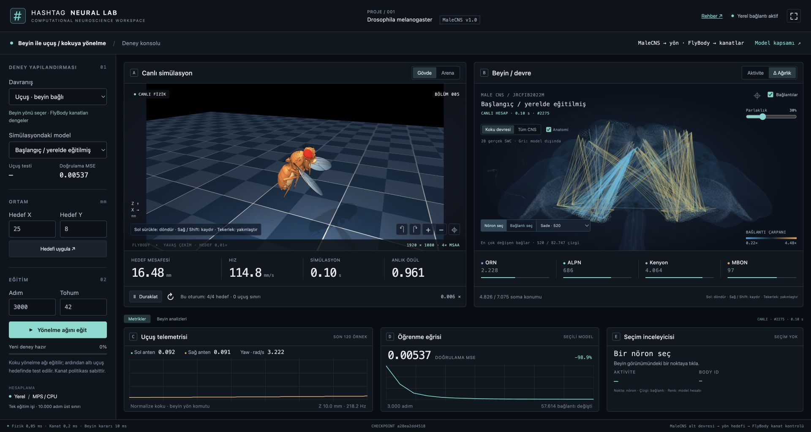
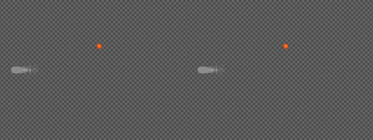
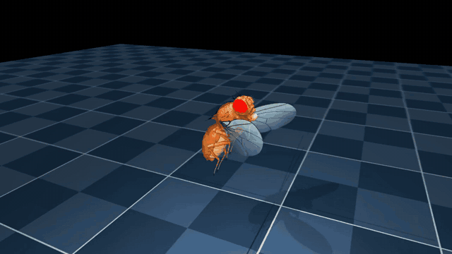
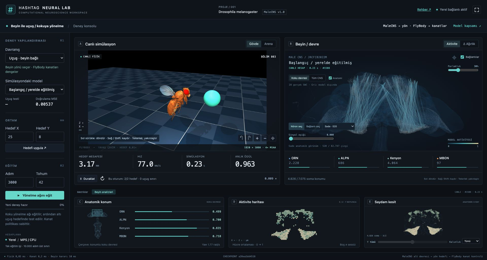

Hashtag Neural Lab
Gerçek sinek anatomisinden çıkarılan bir devreyi eğitin; yön kararını, canlı nöron yanıtlarını ve fizik simülasyonunu tek ekranda inceleyin.
Neural Lab, bilgisayarınızda çalışan bir deney laboratuvarıdır. Solda deneyi kurar, ortada sineğin yürüyüşünü veya uçuşunu izler, sağda o hareket için kullanılan hesabı incelersiniz. Yeni eğitim ayrı kaydedilir; eski ve yeni modeli aynı hedefte karşılaştırabilirsiniz. Büyük veri ve modeller uygulama paketinden ayrı indirilir. API anahtarı gerekmez; eğitimleriniz bilgisayarınızda kalır.
Başla · Anatomiyi keşfet · Eğit · Uçuşu izle · Kanıtlar · Rehber dizini

Gerçek UI kaydı: HD fizik, hesaplanan model aktivitesi, anatomik konum, aktivite haritası ve saydam kesit. Ekrandaki oturum sayacı aynı koşulun tekrarlarıdır; çok hedefli başarı testi değildir.
Bu proje tam beyin emülasyonu değildir. MaleCNS anatomisinden türetilmiş 7.075 nöronluk basitleştirilmiş yönelme ağıdır. Renkler hesaplanan model yanıtıdır. Bacakları FlyGym, kanatları FlyBody'nin hazır motor kontrolcüleri yönetir. Öğrenilen şey yön kararıdır. Bilimsel kapsam.
Bir anatomik haritadan çalışan deneye
Başlangıç sorusu basitti: “İndirilen sinir sistemi verisinden bir devre seçip, onun parametrelerini değiştirince davranıştaki farkı görebilir miyiz?” Bu repo o sorunun izlenebilir bir prototipidir: anatomi → devre → eğitim → fizik. Her aşamanın kaynağı, modeli ve ölçümü ayrı tutulur.

01 — Kendi laboratuvarını aç
Doğrulanan tam platform Apple Silicon macOS; Linux bilimsel kurulumu deneysel, Windows yerel simülasyonu desteklenmiyor. Python 3.11+, pipx ve uçuş için Git gerekir. 15 GiB boş disk, en az 16 GB RAM, tercihen 32 GB RAM ile planlayın. RAM rakamları kapasite önerisidir; 16 GB cihazda performans ölçümü anlamına gelmez. Platform ve donanım ayrıntıları.
macOS'ta pipx yoksa:
brew install pipx git
pipx ensurepath
Terminali yeniden açıp PyPI'den kurun:
pipx install fruitfly-hashtag
fruitfly ui
Kaynak kodla başlamak isterseniz bunun yerine:
git clone https://github.com/mertozbas/fruitfly-hashtag.git
cd fruitfly-hashtag
pipx install .
fruitfly ui
http://127.0.0.1:8766/ açılır. Terminal açık kalır; Ctrl+C sunucuyu durdurur.
| İlk açılış | Bilgisayarınızda yapılan işlem |
|---|---|
| Beyni indir ve kur | Python 3.12 ortamı, yaklaşık 1,11 GB resmi MaleCNS tablosu, seçilmiş geometriler, yerelde 3.000 adımlık ilk model ve kısa HD fizik kontrolü |
| Uçuşu kur — isteğe bağlı | Ayrı Python 3.11 / TensorFlow ortamı ve 19,4 MB FlyBody politika/referans arşivi; Python paketleri ayrıca yer kaplar |
| Laboratuvarı aç | Aynı adreste canlı simülasyon ve devre inceleme UI'ı |
| Sonraki açılış | fruitfly ui; yeniden veri indirme gerekmez |
İndirmeler SHA256 ile doğrulanır. Başlangıç kontrolü altı hedefli başarı testi
olmadığı için ilk modelin fizik skoru boş görünebilir. Tam kaynaklar kurulduktan
sonra mevcut görevler internetsiz çalışır. Rehber düğmesi veya fruitfly docs
paketle gelen yerel kılavuzu açar.
02 — Haritayı ve çalışan devreyi ayır

İlk keşif atlasından gerçek ekran görüntüsü. Buradaki renkler hücre kimliğidir; elektriksel aktivite değildir. Uzun alt yapı ventral sinir kordonudur (VNC).
MaleCNS v1.0 anotasyonları ve bağlantı tabloları kaynak anatomiyi sağlar. UI bu veriden seçilmiş devreyi gerçek soma konumlarına yerleştirir. Konumu eksik nöronlar için yapay koordinat üretmez.
| İncelediğiniz katman | Kapsam |
|---|---|
| Hesaplanan devre | 2.228 ORN → 686 ALPN → 4.064 Kenyon → 97 MBON |
| Gerçek konumda çizilen model nöronları | 4.826 / 7.075; diğerlerinin yanıtları katman metriklerine dahildir |
| Uçları konumlu model bağlantıları | 82.747; varsayılan görünüm okunabilirlik için 520 temsilci çizgi |
| Dallanan anatomik iskeletler | 28 gerçek SWC; üçü çalışan alt devrenin üyesi |
| Eğitimde değişebilen mevcut bağlantılar | 61.210 KC→MBON bağlantısının çarpanları; yeni anatomik kenar eklenmez |
Bir nörona veya bağlantıya tıklayın: gerçek body ID, hücre tipi, taraf, kaynak anotasyonları, anatomik temaslar ve varsa seçili modeldeki değerleri açılır. Düz bağlantı çizgileri soma–soma ilişkisidir; aksonun gerçek güzergâhı değildir.

DNa02 kaydı çalışan yönelme devresinin dışındadır. UI bu nedenle canlı aktivite uydurmak yerine “Devre dışında” gösterir. Kontroller ve metrikler.
03 — Yönelmeyi eğit, değişimi gör
İlk deney kokulu hedefe yönelme. Fizikteki iki antenin konumunda sentetik koku örneklenir. Model yalnızca bu iki yoğunluğu alır; hedef koordinatları karar vericiye doğrudan verilmez. Eğitim, sentetik örneklerde bir referans yön kontrolcüsünün cevabını taklit eder.
- Davranış → Kokuya yönelme seçin; hedefi X=12, Y=4 mm yapın.
- Adım=3000, Tohum=42 ile Eğitimi başlat düğmesine basın.
- Öğrenme ve ardından altı fizik koşulunun değerlendirilmesini bekleyin.
- Yeni modeli simülasyona al ile kaydı çalıştırın.
- Δ Ağırlık görünümünü açın; değişen mevcut bağlantıları inceleyin.
- Eski ve yeni modeli aynı hedefte karşılaştırın. MSE ile fizik başarısını birlikte okuyun.

Her eğitim aynı anatomik başlangıçtan yeni bir deneydir. Seçili checkpoint'in kaldığı yerden devam etmez. Hedef X/Y canlı değerlendirmeyi değiştirir; eğitim örneklerini değiştirmez. İlk iki anatomik katman sabittir; KC→MBON çarpanları ve yapay motor okuması öğrenilir. Adım adım eğitim rehberi.
Aynı hedef, iki model

Sol: eğitim öncesi. Sağ: 3.000 adım / tohum 42 sonrası. Hedef (12, 4) mm,
fizik tohumu 10. Yeni kayıt: son mesafe 27,60 → 1,50 mm, devrilme yok.
İki kayıt 5× yavaşlatılmıştır; sağ taraf hedefe ulaştıktan sonra son karede kalır.
Bu tek koşulun gösterimidir. MP4 kaydı · Kayıt ve test kanıtları.
04 — Aynı yönelme ağını uçuşta kullan

Gerçek MuJoCo / FlyBody kaydı, hedef (22, 6) mm. 0,03× oynatım; kanatları
incelemek için yavaşlatılmıştır. 720p MP4.
Uçuş kurulduğunda Davranış → Uçuş · beyin bağlı seçin. Aynı MaleCNS alt ağı kokuya göre yön komutu üretir; sınırlandırılmış komut FlyBody'nin hazır kanat politikasına referans olur. Beyin paneli o anda kullanılan hesabı gösterir.

Uçuş seçiliyken Yönelme ağını eğit, yeni ağı altı uçuş hedefinde de sınar. Sinek havada başlar. Kalkış, iniş, irtifa öğrenimi ve kanat politikasını yeniden eğitme bu sürümde yoktur. Koku yönelmesi dışındaki “hazırlık” seçenekleri de uygulanmış eğitimler değildir. Uçuş kontrol yolu ve kullanım.
05 — Sonucu neyle doğruluyoruz?
| Deney | Gözlenen sonuç | Yorum |
|---|---|---|
| İlk kontrollü yürüyüş testi | Eğitim öncesi 0/6, sonrası 5/6; 0 devrilme | Altı sabit hedef/tohum; bir başarısız koşul dahil |
| 3.000 adım / 42 uçuş testi | 6/6, 0 uçuş sınırı ihlali | Kısa, sabit irtifalı altı hedef |
| Ayrı 6.000 adımlık uçuş modelinde müdahale | Aynı iki koşulda bağlı 2/2, çıkış sıfır 0/2, ters 0/2 | O modelin yön komutunun etkisini sınar |
| Yeni medya kayıtları | Yürüyüşte önce/sonra farkı ve beyne bağlı uçuş | Gösterim koşulları; geniş kapsamlı benchmark değil |
Bu sayılar genel başarı oranı veya biyolojik doğruluk iddiası değildir. Kayıt kaynakları, checkpoint özetleri, başarısızlıklar ve yeniden üretme komutları deney kayıtlarında bulunur. Paket CI'ı macOS/Linux'ta kurulumu ve rehberi sınar; bilimsel Linux doğrulaması yerine geçmez.
Rehberler ve depo haritası
| Başlamak istediğiniz yer | Belge |
|---|---|
| Tüm belgelerin başlangıç noktası | Rehber dizini |
| pipx, indirme, disk, platformlar ve ilk açılış | Kurulum |
| Mouse, parlaklık, seçim ve metrikler | UI kullanımı · Laboratuvar turu |
| Eğitim, kayıt, karşılaştırma, bilimsel kapsam | Eğitim |
| Fizik ve videolar | Yürüyüş · Uçuş |
| Kaynak URL'leri, dosyalar ve SHA256 | Veriler ve modeller |
| Gerçek ölçümler ve görsel kökeni | Deneyler · Medya dizini |
| Güncelleme, yedekleme, sorunlar | Sorun giderme |
| Kod, build, test ve yayın | Geliştirici rehberi |
src/fruitfly_lab/ Hafif CLI, kurulum ekranı ve kaynak manifesti
ui/ Tam ekran laboratuvar; Three.js + statik JavaScript
lab_*.py FastAPI, canlı fizik, beyin geometrisi ve eğitim işleri
odor_policy.py Yürüyüş ve uçuşun ortak devre hesabı
flight/ Ayrı TensorFlow ortamı ve uçuş motor adaptörü
environments/walking/ Kilitli bilimsel Python ortamı
docs/ Çevrimdışı rehber, görüntüler, videolar ve kanıtlar
Veriler ve kişisel eğitimler varsayılan ~/.fruitfly-hashtag/ altında, repo ve
pipx ortamından ayrı tutulur. data/ resmi indirmeleri, models/lab_runs/ kişisel
koşuları, artifacts/ türetilmiş çıktıları içerir. Paket yükseltmesi eğitimleri
silmez. Başka disk için her komutta komut adından önce aynı --home kullanın:
fruitfly --home /Volumes/LabDisk/neural-lab ui
fruitfly --home /Volumes/LabDisk/neural-lab doctor
Kaynaklar ve teşekkür
Bu laboratuvar MaleCNS, NeuroMechFly / FlyGym, FlyBody, MuJoCo ve Three.js üzerine kuruludur. Gövde, anatomi ve motor politikaları farklı araştırma kaynaklarından gelir; birleştirilmiş sistem taranan bireyin dijital ikizi değildir.
Orijinal kod MIT. MaleCNS verisi CC BY 4.0, FlyBody kodu Apache 2.0, Figshare politika/veri arşivleri GPL 3.0+, Three.js MIT. Dış kaynaklar uygulamanın MIT lisansına dönüşmez. Görsellerin kaynakları ve uyarlamaları medya bildiriminde, tam atıflar THIRD_PARTY_NOTICES.md dosyasında bulunur.
Neural Lab rehber dizini
Kur, incele, eğit, karşılaştır. Bu dizin bilgisayarında Neural Lab kullanmak isteyen, yazılıma aşina ama hesaplamalı sinirbilime yeni başlayan kullanıcılar içindir. Kod adları ve kaynak veri alanları özgün halleriyle korunur; açıklamalar Türkçedir.
İlk kez geliyorsanız
- Kurulum: pipx uygulamasını açın; veri ve bilimsel ortamı hazırlayın.
- UI kullanımı: hedef, mouse, model seçimi ve canlı metrikleri öğrenin.
- Eğitim: 3.000 adım / tohum 42 deneyini çalıştırın, yeni kaydı karşılaştırın.
- Deney kayıtları: kendi sonucunuzu hangi koşullarla karşılaştıracağınızı görün.
İhtiyacınıza göre
| Amaç | Başlangıç |
|---|---|
| Projenin hikâyesi ve canlı görüntüler | Ana README |
| Tek ekranın çalışma mantığı | Laboratuvar turu |
| Eğitim öncesi/sonrası yürüyüş | Simülasyon rehberi |
| Beyne bağlı uçuş, zamanlama, motor adaptörü | Uçuş README |
| Hangi veriyi, kaç GB ve neden indiriyorum? | Veriler ve modeller |
| Hata, port, güncelleme, yedekleme, kaldırma | Sorun giderme |
| Kodu değiştir, doğrula, paketle | Geliştirme |
| Görüntülerin kaynağı ve kayıt koşulları | Medya README |
| Araştırma kaynakları ve lisanslar | Üçüncü taraf bildirimleri |
İnternetsiz rehber
fruitfly docs
UI'daki Rehber bağlantısı da aynı yerel belgeyi açar. Metinler, ekran görüntüleri, şemalar ve kısa videolar pakete dahildir. Resmi araştırma siteleri, GitHub, PyPI ve dış kaynak bağlantıları internet gerektirir. Çevrimdışı HTML buradadır; düzenleme kaynağı Markdown dosyalarıdır.
Kurulum
Uygulama önce veri olmadan açılır; büyük indirmeyi kurulum ekranından başlatırsınız. Bu rehber boş bir bilgisayardan ilk canlı deneye kadar yolu anlatır.
Rehber dizini · Kurulum · Kullanım · Eğitim
Gereksinimler
İlk aşama küçük UI/başlatıcı paketi, ikinci aşama bilimsel ortamdır.
pipx install yalnızca ilk aşamayı yapar; beyin verisi indirmez.
| Bileşen | Gereksinim |
|---|---|
| Başlatıcı | Python 3.11+ ve pipx |
| Doğrulanan platform | Apple Silicon macOS; geliştirme doğrulaması M4 Max üzerinde |
| Linux | Deneysel; x86_64, OpenGL/EGL veya OSMesa sürücüleri gerekir; tam Linux testi yapılmadı |
| Intel Mac | Yürüyüş doğrulanmadı; mevcut TensorFlow uçuş kilidi desteklenmiyor |
| Windows | Yerel bilimsel kurulum desteklenmez; WSL2/Linux deneysel, HD render garantisi yok |
| RAM | En az 16 GB ile planlayın, 32 GB önerilir; tam bağlantı matrisi hazırlanır |
| Disk | En az 15 GiB boş alanla başlayın; uv önbelleği ve eğitimler ek alan kullanır |
| İnternet | İlk kurulum, güncelleme ve yeni kaynak indirme için |
| Tarayıcı | WebGL destekli güncel masaüstü tarayıcı |
| Git | Klonlama ve uçuş ortamındaki sabitlenmiş FlyBody kaynağı için |
Python 3.12/3.11'i ayrı ayrı elle kurmanız gerekmez. Paketle gelen uv gerekirse
bunları indirir; sistem Python'unuzu değiştirmez.
uv Python yönetimi.
Yönelme eğitimi Apple Silicon'da MPS, diğer ortamlarda CPU kullanır. GPU zorunlu
değildir; otomatik CUDA eğitim yolu yoktur. Uçuş ayrı TensorFlow ortamındadır.
1. pipx'i hazırlayın
macOS/Homebrew:
brew install pipx git
pipx ensurepath
Ubuntu/Debian:
sudo apt update
sudo apt install pipx git
pipx ensurepath
Terminali yeniden açın; pipx --version çalışmalı. Eski Python seçilirse kuruluma
--python python3.12 ekleyin. pipx rehberi.
sudo pip install gerekmez; uygulama kullanıcı hesabında çalışır.
2. Uygulamayı kurun
pipx install fruitfly-hashtag
fruitfly --version
fruitfly ui
Klonlanmış repoda pipx install . kullanın. Yayımlanmış PyPI sürümü için
pipx install fruitfly-hashtag aynı işi yapar. İndirilen wheel de kurulabilir:
pipx install ./fruitfly_hashtag-0.2.1-py3-none-any.whl.
http://127.0.0.1:8766/ açılır. İlk açılışta kurulum ekranı gelir; veri olmadan çalışır. Büyük indirme düğmeye bastıktan sonra başlar. Terminali açık tutun.
3. Beyni ve yürüyüşü kurun
Beyni indir ve kur sırasıyla:
- Kilitli Python 3.12 paketlerini ayrı
.venviçine kurar. - MaleCNS v1.0 anotasyon, nörotransmiter ve bağlantı tablolarını indirir.
- Sabit kaynak sürümü, boyut ve SHA256 özetlerini doğrular.
- Keşif matrisini, 28 seçilmiş SWC iskeletini ve anatomi yüzeyini hazırlar.
- ORN → ALPN → Kenyon → MBON devresini oluşturur.
- Başlangıç modeli yoksa 3.000 adım / tohum 42 ile yerelde eğitir.
- UI geometrisini üretir; kısa gerçek fizik ve 1920×1080 render kontrolü yapar.
Bu başlangıç kontrolü altı hedeflik başarı testi değildir. İlk modelde fizik skoru henüz boş olabilir; UI'dan yeni eğitim başlatınca görev testi de yapılır.
Günlük ekranda ve .runtime/setup.log içinde görünür. İndirme bittikten sonra
matris hazırlığı CPU/RAM kullanmaya devam eder; süre donanıma ve internete bağlıdır.
Bağlantı kesilirse aynı düğmeyle tekrar deneyin. MaleCNS .part dosyaları mümkünse
HTTP Range ile sürdürülür. Tam dosyalar yeniden indirilmeden doğrulanır. Bozuk
tamamlanmış dosyanın üzerine sessizce yazılmaz; hata konumunu gösterir.
4. İsteğe bağlı uçuş
Ana kurulum bitince Uçuşu kur düğmesi açılır. Python 3.11 / TensorFlow 2.15.1
ayrı flight/.venv içine kurulur. FlyBody'nin sabit commit'i GitHub'dan, politika
ve referans arşivleri Figshare'den alınır. Politika yüklenir ve kısa fizik kontrolü
yapılır. Yürüyüş ortamı değişmez; kanat çırpmayı yeniden eğitmezsiniz.
Yaklaşık 3 GB'lık resmi yürüyüş veri kümesi bu uçuş kurulumu için gerekmez.
5. Laboratuvar ve sonraki açılışlar
Laboratuvarı aç aynı adresi canlı UI'a dönüştürür. Sonraki oturum: fruitfly ui.
Otomatik tarayıcı istemiyorsanız fruitfly ui --no-browser; port doluysa
fruitfly ui --port 8770. Kurulum yöneticisine dönmek için Ctrl+C, sonra
fruitfly ui --setup. Aynı dizinde ikinci bir UI/kurulum eşzamanlı başlatılamaz.
Terminalden kurulum
fruitfly setup walking
fruitfly setup flight
fruitfly doctor
fruitfly ui
Birlikte: fruitfly setup all. Durdurmak: Ctrl+C. doctor dosya/ortam varlığını
kontrol eder; bilimsel geçerlilik testi yapmaz.
fruitfly --home /Volumes/LabDisk/neural-lab setup all
fruitfly --home /Volumes/LabDisk/neural-lab ui --port 8770
Tüm komutlarda aynı veri dizinini kullanın. Alternatif FRUITFLY_HOME ortam
değişkenidir. Sistem HOME değerini değiştirmeyin. Veri dizini Git deposu olmamalı;
yönetilen kod buraya sürüm güncellemelerinde yerleştirilir, veriler korunur.
Laboratuvar turu
Bir ekranda deney, fizik ve kullanılan hesap. fruitfly ui ile açılır;
sağ üstteki ⛶ tam ekranı etkinleştirir. Ana çalışma alanında sayfa kaydırması
olmaz; uzun nöron kayıtları kendi ayrıntı panelinde kayar. En az 1200×720
masaüstü alanı önerilir.
Kurulum · Mouse ve metrikler · Eğitim · Rehber dizini
Ekranı soldan sağa okuyun
| Bölüm | Burada ne yaparsınız? |
|---|---|
| Deney konsolu | Davranış, kayıtlı model, hedef X/Y, eğitim adımı ve tohum seçimi |
| A — Canlı simülasyon | Gerçek MuJoCo görüntüsü, hedef mesafesi, hız, fizik zamanı, duraklatma |
| B — Beyin / devre | Aynı modelin son hesabı, nöron/bağ seçimi, aktivite ve Δ Ağırlık |
| Metrikler sekmesi | Anten sinyalleri, modelin öğrenme eğrisi, seçili kaydın özeti |
| Beyin analizleri sekmesi | Anatomik konum, X/Z aktivite haritası ve Y boyunca saydam kesit |
| Alt durum şeridi | Fizik/karar zamanlaması, checkpoint kimliği ve model kapsamı |
Bir anı inceleyin
- Hedefi uygulayın; sineğin yaklaşmasını izleyin.
- Duraklat düğmesine basın. Fizik ve hesap sabitlenir, kameralar açık kalır.
- Beyindeki bir noktayı veya dallanan iskeleti seçin.
- Kaydın Alt devre alanına bakın. Model dışındaysa canlı aktivite yoktur.
- Bağlantılar veya Kaynak alanları ile anatomik veriyi açın.
Bağlantıları görünür tutun
Sade · 520 okunabilir başlangıçtır. Nöronun bağları seçilen somanın bütün giriş/çıkışlarını, Tüm bağlar konumlu 82.747 model bağlantısını açar. Parlaklık renk vurgusunu değiştirir; sinyal eşiği küçük katkıları görünümden süzer. İkisi de ağırlıkları veya fiziği değiştirmez. Çizgiler anatomik soma ilişkileridir.
Aktivite son ileri geçişin sürekli yanıtlarını gösterir. Δ Ağırlık, kaydedilmiş modelin anatomik başlangıca göre bağlantı çarpanlarını gösterir; yeni sinaps oluşumu veya iki ayrı eğitimin doğrudan farkı değildir.
Alt analizler ne söyler?
Anatomik konum haritası gerçek CNS yüzeyini ve konumlu alt devrenin sınırını gösterir. ORN/ALPN/Kenyon/MBON çubukları anatomik bölge sınırları değil, model katmanlarının ortalama yanıtlarıdır. Aktivite haritasında boş hücre “veri yok” demektir. Saydam kesit konum filtresidir; tıbbi X-ray veya ölçülmüş sıcaklık değildir.
Canlı görüntü 1920×1080 / 4× MSAA üretilir. Çözünürlük 60 FPS garantisi vermez; RTF simülasyon zamanının duvar saatine oranıdır. Uçuş kanatları görmek için yavaşlatılmıştır. Uçuş ayrıntıları.
Deney değiştirirken
Devam eden eğitim ara ağırlıkları otomatik olarak canlıya uygulanmaz; simülasyon seçili kaydı kullanır. Eğitim tamamlandığında yeni modeli siz yüklersiniz. UI'nin “bu oturum” sayacı tekrar edilen canlı bölümlerdir; kaydedilmiş altı hedef test skoruyla karıştırmayın. Deneyleri doğru karşılaştırma.
UI kullanımı
Rehber dizini · Kurulum · Kullanım · Eğitim
Sağ üstte ⛶ tam ekranı açar. Rehber ayrı sekmede çevrimdışı kılavuzu açar. Masaüstü düzeni tek ekran için tasarlanmıştır.
Deney seçimi
Davranış menüsünde kokuya yönelme ve kuruluysa beyne bağlı uçuş aktiftir. “Hazırlık” yazan kaçınma, görsel yönelme ve arazi uygulanmış eğitimler değildir. Simülasyondaki model hangi kayıtlı ağın çalıştığını gösterir; seçim eğitim başlatmaz.
Hedef X/Y milimetredir, sınırı ±30 mm. Hedefi uygula yeni bölüm başlatır. Her serbest hedefte başarı garanti edilmez; kısa uçuşta gerideki hedefe erişilemeyebilir.
Simülasyon ve mouse
| İşlem | Kontrol |
|---|---|
| Döndür | Sol tuşla sürükle |
| Kaydır | Sağ tuş veya Shift + sol tuşla sürükle |
| Yakınlaş/uzaklaş | Tekerlek / trackpad kaydırma |
| Sineğe odaklan | Gövde kamera seçeneği |
| Hedefi ve ortamı gör | Arena kamera seçeneği |
| Anı incele | Duraklat; kamerayı kullanmaya devam et |
Görüntü MuJoCo'da 1920×1080 üretilir; tarayıcı paneli daha küçük olabilir. HD gerçek zamanlı hız garantisi değildir. Uçuş yavaş çekimdir; simülasyon zamanı duvar saatinden farklı ilerler. Kanat hareketi hazır FlyBody politikasından gelir.
Beyni okumak
Aktivite, son beyin kararındaki hesaplanan nöron yanıtıdır; biyolojik ölçüm değildir. Duraklatınca son değerler sabit kalır. 7.075 yanıt hesaplanır; gerçek soma konumu olan 4.826 nöron 3B'de çizilir. Eksik konumlar uydurulmaz.
Sade 520 temsilci bağ, Nöronun bağları seçili nöronun bağları, Tüm bağlar konumu bilinen 82.747 model bağı gösterir. Son seçenek daha yoğundur. Parlaklık ve sinyal eşiği yalnızca görünümü değiştirir, çalışan ağı değiştirmez.
Düz çizgiler soma–soma bağlantı gösterimidir, akson geometrisi değildir. Arka plandaki 28 dallanan SWC gerçek anatomidir; yalnızca üçü çalışan alt devreye dahildir. Hesaplanmayan iskeletler gri kalır.
Nörona/bağa tıklayın: bodyId, sınıf, kaynak anotasyonları, temaslar ve seçili modeldeki katsayılar ayrıntı panelinde açılır. JSON indirme seçili kaydı dışa aktarır; bütün checkpoint'i indirmez.
Δ Ağırlık anatomik başlangıca göre katsayı değişimidir; iki eğitimin birbirine farkı değildir. İki modelde aynı bağlantıyı ayrı ayrı seçerek karşılaştırabilirsiniz.
Metrikler
| Gösterge | Anlamı |
|---|---|
| Hedef uzaklığı | Hedefe uzaklık (mm) |
| Hız | Gövde hızı (mm/s) |
| Simülasyon zamanı | Fizikte geçen süre |
| Ödül | Görevde raporlanan ilerleme; bu sürümde eğitim algoritmasının ödül fonksiyonu değildir |
| Sol/sağ koku | Gerçek anten konumlarından sentetik alanda alınan yoğunluk |
| Motor komutu | Yürüyüşte CPG sürüşü, uçuşta sınırlanmış yön hızı |
| Doğrulama MSE | Ayrı örneklerde öğretmen yön komutuyla model çıktısının ortalama kare farkı |
| Fizik testi | Seçili görevin son testindeki başarı sayısı; sonuç yoksa boş |
| İrtifa / kanat frekansı | Uçuş fiziği; ayrı öğrenilmiş beyin çıktıları değildir |
| Aktivite haritası | X/Z izdüşümünde model yanıtı; sıcaklık ölçümü değildir |
| Saydam kesit | Gerçek konumların Y dilimi; X-ray veya tıbbi tarama değildir |
ORN / ALPN / Kenyon / MBON hücre grupları ve hesaplama aşamalarıdır; anatomik bölge sınırlarının segmentasyonu olarak yorumlamayın.
Bir kaydı inceleyin
Nöron seç / Bağlantı seç yoğun bölgelerde seçim türünü belirler. Özet, bağlantılar ve kaynak alanları aynı panelde açılır. Model dışındaki hücre için aktivite hesaplanmaz. Uzun kayıt panelin içinde kayar; ana laboratuvar sabit kalır.
Eğitim ve deney rehberi
Amaç: yeni bir yönelme modeli üretmek, fizik testini görmek ve eski kayıtla aynı koşullarda karşılaştırmak. Bu rehberdeki adımlar mevcut UI ile yapılır.
Rehber dizini · Kurulum · Kullanım · Eğitim
İlk yürüyüş eğitimi
Akış: başlangıcı izle → eğit → fizik testini bekle → yeni modeli yükle → karşılaştır.
fruitfly uiaçın. Kokuya yönelme → Eğitim öncesi modelini seçin.- Hedefi X=12, Y=4 yapıp Hedefi uygula seçin; başlangıç hareketini izleyin.
- Adım=3000, Tohum=42 yazıp Eğitimi başlat düğmesine basın.
- MSE grafiğini izleyin. Aynı anda bir iş çalışır; adım aralığı 200–10.000'dir. Eğitim + değerlendirme 600 saniyeyle sınırlıdır. Yavaş cihazda daha az adım deneyin.
- Eğitimden sonra altı ayrı fizik koşulu değerlendirilir. Tamamlandı durumunu bekleyin; “değerlendiriliyor” henüz bitmiş değildir.
- Yeni modeli simülasyona al seçin. Başka hedefleri deneyin, eski modeli menüden geri alarak karşılaştırın.
- Δ Ağırlık ile değişen katsayıları, Aktivite ile canlı yanıtı inceleyin.
3000/42 başlangıç önerisidir, başarı garantisi değildir. Tohum tekrarlanabilirliği
artırır; cihaz/BLAS/MPS farklılıkları sayısal sonucu değiştirebilir.
Ne öğreniliyor?
İki antenin sentetik koku yoğunluğu giriş olur. ORN → ALPN → Kenyon → MBON gerçek MaleCNS topolojisine bağlanır. Program koku gradyanı örnekleri üretir; öğretmen kuralı sağ/sol yön komutu verir. Ağ bunları denetimli taklit öğrenmesiyle öğrenir.
Mevcut KC→MBON bağlarının sınırlı çarpanları ve yapay motor okuması değişir. Nöron kimlikleri, bağlantıların varlığı, diğer anatomik katmanlar ve gövde kontrolcüleri korunur. Yeni anatomik kenar üretilmez. “Beynin yeni hali” burada yeni katsayıları taşıyan checkpoint'tir.
Her iş 2.048 sentetik eğitim, ayrı 512 doğrulama örneği kullanır. Hedef X/Y bu veri kümesini değiştirmez. Her yeni iş aynı anatomik başlangıçtan başlar; seçili checkpoint'ten fine-tuning yapılmaz. Yeni koku kimliği, ödül tasarımı veya kendi veri kümenizi eklemek kod değişikliği ve yeni değerlendirme gerektirir.
Uçuş yönelmesi
- Uygulamayı
Ctrl+Cile durdurupfruitfly setup flightçalıştırın. Alternatif:fruitfly ui --setupekranında Uçuşu kur. - Laboratuvarda Uçuş · beyin bağlı seçin. İlk geçişte yürüyüşte seçili ağ aktarılır; model menüsünden başka kayıt seçebilirsiniz.
- X=25, Y=8 gibi ileri bir hedef deneyin. Sinek havada başlar.
- Adım/tohum girip Yönelme ağını eğit seçin. Aynı ağ eğitilir; bu kez altı uçuş koşulunda test edilir.
- Yeni modeli yükleyin; aktivite, anten, yön, irtifa ve kanat telemetrisini birlikte okuyun.
Zincir: anten → MaleCNS alt ağı → MBON yön okuması → sınırlı yön referansı → hazır FlyBody kanat politikası → MuJoCo fiziği → yeni anten konumu. Eşit koku girdisindeki nötr değer çıkarılır; yön kazancı 60, sınırı ±8 rad/s'dir. Beyin 10 ms, kanat kontrolü 0,2 ms, fizik 0,05 ms adımlarıyla çalışır. Kanat politikası, irtifa, kalkış ve iniş bu eğitimle öğrenilmez. Bir yürüyüş checkpoint'inin uçuşta başarısı varsayılmaz; görev testi ayrı okunur.
Sonucu değerlendirme
MSE azalması sentetik komutların daha iyi taklit edildiğini gösterir. Fizik testi bunun gövdede işe yarayıp yaramadığına dair küçük bir sınamadır. 6/6 bile genel başarı oranı değildir. Yeni cihazda veya hedefte aynı sonuç garanti edilmez.
| Test | Koşullar |
|---|---|
| Yürüyüş | (12,±4), (10,±5), (14,±3) mm; tohumlar 10–15 |
| Uçuş | (22,±6), (28,±9), (24,±10) mm; tohumlar 101–106 |
Serbest hedef bu sabit listeyi değiştirmez. Küçük karşılaştırma için adım sayısını koruyup tohumları 42/43/44 deneyin; MSE, başarı, düşme ve son uzaklığı birlikte kaydedin. Yalnızca en iyi koşuyu genel başarı diye sunmayın.
Kayıtlar
UI işleri models/lab_runs/run-<UTC zaman damgası>/ içine ayrı kaydolur:
| Dosya | İçerik |
|---|---|
run.json |
Kimlik, görev, adım, tohum, iş durumu |
trained.npz, untrained.npz |
Eğitim sonrası/öncesi ağırlık ve motor okuması |
circuit.json, body_ids.npz, layer*.npz |
Devre kimliği ve anatomik katmanlar |
training.json |
MSE geçmişi ve değişen katsayı sayısı |
evaluation.json |
Göreve özgü fizik sonuçları |
training.log, tensorboard/ |
Günlük ve eğitim olayları |
Taşırken bütün koşu klasörünü ve kaynak sürümünü koruyun. UI uyumlu complete
koşularını listeler. Uygulama açıkken dosyaları elle değiştirmeyin. Durdurma veya
kapanma önceki başarılı koşuları silmez; yarım iş başarılı model olarak sunulmaz.
Yarım eğitim adımından otomatik devam edilmez; yeni iş başlatabilirsiniz.
Bilimsel sınırlar
Anatomi gerçektir; aktivite hesaplama modelinin yanıtıdır. Fizyolojik uyarıcı/ baskılayıcı işaret, tekrarlayan dinamik, spike, gecikme, reseptör/koku kimliği ve biyolojik plastisite modellenmez. İskelet örnekleri tam sinir sistemi değildir. Isı/kesit görünümleri hesaplanan yanıtın görselleştirmesidir. Bu laboratuvar bu sınırlı varsayımlarla deney yapmak içindir; yaşayan sineğin bütün beyninin veya biyolojik öğrenmesinin yeniden üretildiğini iddia etmez.
Sonucunuzu karşılaştırın
Deney kayıtları başarısız hedefleri de içerir. Önce/sonra yürüyüş videosu tek koşulu gösterir; uçuş rehberi aynı ağın ayrı motor adaptörünü açıklar.
Kokulu hedefe yürüyüş
İki anten, bir yön kararı ve gerçek gövde fiziği. MaleCNS kaynaklı alt devre kokuya göre dönüşü seçer. FlyGym / NeuroMechFly hazır yürüyüş kontrolcüsü bacak hareketini üretir; MuJoCo temasları ve gövde hareketini hesaplar.
Sol eğitim öncesi, sağ 3.000 adım / tohum 42 sonrası. İki kayıt 5× yavaş; sağ taraf başarıdan sonra son karede tutulur. MP4.
Kurulum · Eğitim · Kanıtlar · Rehber dizini
Kendiniz deneyin
fruitfly ui
- Kokuya yönelme ve Eğitim öncesi modeli seçin.
- X=12, Y=4 mm → Hedefi uygula. Yaklaşımı veya uzaklaşmayı izleyin.
- Eğitilmiş kaydı seçip aynı hedefi tekrar uygulayın.
- Arena ile yolu, Gövde ile bacakları inceleyin.
- Yeni deney için Adım=3000, Tohum=42 → Eğitimi başlat.
Video canlı UI'nin yerine geçmez. Kayıt koşulları sabittir; UI'da hedefi, modeli, kamerayı ve incelemek istediğiniz beyin görünümünü değiştirebilirsiniz.
Döngü
Gerçek anten konumları → sentetik sol/sağ koku yoğunluğu
→ yapay duyusal eşleme → 7.075 nöronluk MaleCNS alt ağı
→ yapay yön okuması → sol/sağ CPG genliği
→ FlyGym hibrit bacak kontrolcüsü → MuJoCo → yeni anten konumları
Karar aralığı 10 ms, fizik adımı 0,1 ms'dir. UI'da başarı 1,5 mm hedef mesafesidir; başarı veya 3 saniye sonunda aynı hedef/tohumla yeni bölüm başlar. Bu tekrarlar ortamı gözlemek içindir, bağımsız bir başarı oranı tahmini değildir.
Öğrenilen ve sabit kalan
İlk iki anatomik katman sabittir. 61.210 KC→MBON bağlantısının pozitif, sınırlı çarpanları ve yapay yön okuması 2.048 sentetik örnekte öğrenilir; 512 ayrı örnek doğrulamada kullanılır. Bacak hareketi yeniden eğitilmez. Yeni anatomik kenar eklenmez; koku molekülleri ve biyolojik reseptör kimlikleri modellenmez.
Bu sürümdeki eğitim gözetimli taklittir. Ekrandaki anlık ödül, optimizasyonun ödül fonksiyonu değildir. Ayrı deneysel PPO denetimleri bu devrenin eğitildiği veya biyolojik pekiştirmeli öğrenme yapıldığı şeklinde yorumlanmamalıdır.
Gözlenen sonuçlar
14 Eylül 2026 tarihli medya kaydında hedef (12, 4) mm, fizik tohumu 10:
eğitim öncesi son mesafe 27,60 mm, sonrası 1,50 mm; iki durumda da
devrilme yok. Daha önceki altı koşullu testte sonuç 0/6 → 5/6 idi.
(10, 5) mm / tohum 12 başarısız koşul olarak korunmuştur.
Yeni video ile tarihsel çok koşullu değerlendirme ayrı kayıtlardır. Koşullar, model hash'leri ve ham ölçüm özeti.
Eski keşif sayfaları
Geliştirme ortamındaki http://127.0.0.1:8765/simulation/ kayıtlı karşılaştırma
sayfasıdır; 8765/ anatomik keşif atlasıdır. Bunlar önceki yerel araştırma
çıktılarıdır. Yeni kullanıcıların bu porta ihtiyacı yoktur: fruitfly ui 8766
üzerinde canlı laboratuvarı ve Rehber bağlantısını sunar. Atlasın aynı 28
iskeleti canlı beyin görünümünde de kullanılır.
Kaynak: NeuroMechFly / FlyGym · MaleCNS · Bilimsel sınırlar.
Beyne bağlı uçuş
Aynı yönelme devresi, farklı gövde kontrolcüsü. MaleCNS kaynaklı alt ağ kokuya göre yönü seçer; FlyBody'nin hazır politikası kanatları ve uçuş dengesini yönetir.
Kurulum · Eğitim · Ölçümler · Tüm rehberler
Önce uçuşu açın
fruitfly setup walking
fruitfly setup flight
fruitfly ui
UI kurulum ekranındaki Beyni indir ve kur → Uçuşu kur → Laboratuvarı aç düğmeleri aynı işlemleri yapar. Bilimsel uçuş ortamı Python 3.11 / TensorFlow ile ayrı kurulur; yürüyüşün Python 3.12 ortamını değiştirmez. Resmi politika ve referans arşivleri yaklaşık 19,4 MB'dir; Python bağımlılıkları ek alan ister.
Laboratuvarda Davranış → Uçuş · beyin bağlı seçin. X=22, Y=6 mm ile başlayın, Hedefi uygula düğmesine basın. Gövde kanatları yakından, Arena hedefle ilişkiyi gösterir. Sol sürükleme döndürür, sağ/Shift sürükleme kaydırır, tekerlek yakınlaştırır. Duraklatılmış fizikte de kamera çalışır.
Kayıt: tohum 10, hedef (22, 6) mm, 3.000 adımlık yönelme modeli. 720p kaynak,
0,03× oynatım. MP4. Canlı UI 1920×1080 / 4× MSAA
üretir ve yaklaşık 0,01× oynatımı hedefler; gerçek hız RTF alanındadır.
Beyin uçuşa nereden bağlanıyor?
Fizikteki iki anten konumu → sentetik koku yoğunlukları
→ ORN → ALPN → Kenyon → MBON → öğrenilmiş yön okuması
→ nötr kalibrasyon → sınırlanmış yön hızı
→ çevrimiçi yön / konum referansı → hazır FlyBody kanat politikası
→ kanat eylemleri → MuJoCo fiziği → yeni anten konumları
Yürüyüş ve uçuş aynı odor_policy.Policy hesabını ve checkpoint biçimini kullanır.
Motor adaptörü yaw = clip(60 × clip(readout − neutral, −1, 1), −8, 8) rad/s
uygular. neutral, aynı modelin [0.1, 0.1] eşit koku girdisindeki okumasıdır.
Hedef açısı bu okumanın yerine gizlice verilmez. Bu bağlantı bir mühendislik
adaptörüdür; biyolojik MBON→kanat devresinin keşfedildiği anlamına gelmez.
| Saat / nicelik | Değer | Nasıl yorumlanır? |
|---|---|---|
| MuJoCo fizik adımı | 0,05 ms | Aerodinamik ve gövde hesabı |
| Kanat kontrolü | 0,2 ms | Hazır politikanın eylem üretmesi |
| Beyin / anten hesabı | 10 ms | Son karar, bir sonraki örneğe kadar korunur |
| Referans hız / irtifa | 100 mm/s / 10 mm | Sabit görev ayarları; öğrenilmiş irtifa değil |
| Hedef başarısı | XY uzaklığı <2 mm, geçerli uçuş | Bölüm üst sınırı 0,45 simülasyon saniyesi |
| Kaynak birimleri | cm / gram / saniye | UI konum ve hızı mm'ye çevirir |
UI'nin 7.075 yanıtı kullanılan yön hesabından gelir. Checkpoint SHA256, devre kimliği, fizik zamanı ve beyin örnek zamanı birlikte izlenir. Nöron yanıtları biyolojik voltaj veya spike değildir; beyin örneği gövde zamanından en fazla bir beyin adımı geridedir. Reset karesindeki hazır ama henüz uygulanmamış karar telemetride ayrıca işaretlenir.
Uçuş seçiliyken eğitim
Adım=3000, Tohum=42 → Yönelme ağını eğit → altı hedef testini bekle → Yeni modeli simülasyona al. Ardından Δ Ağırlık görünümünü açın. Yeni koşu ayrı klasöre kaydedilir. Başka modele geçmek eski kaydı silmez.
Eğitim aynı anatomik başlangıçtan yeni bir yönelme ağı üretir. Mevcut KC→MBON çarpanları ve yapay yön okuması değişir; kanat politikası sabittir. Model yürüyüşte de seçilebilir; her davranışın fizik skoru ayrıdır. Test yoksa skor boş kalır.
Kontrol edilen sonuç ve sınırları
3.000 adım / tohum 42 modeli altı kısa uçuş hedefinde 6/6, sıfır sınır ihlali verdi. Ayrı 6.000 adımlık modelde aynı iki koşul, beyin çıkışı bağlıyken 2/2, sıfırlandığında 0/2, ters çevrildiğinde 0/2 oldu. Checkpoint'ler ve koşullar deney kaydında ayrı tutulur.
Sinek havada başlar. Yerden kalkış, iniş, irtifa seçimi, türbülans, uzun rota, tüm MaleCNS dinamiği ve biyolojik öğrenme doğrulanmış özellikler değildir. Başarılı kısa hedef testi serbest uçuş genellemesi değildir.
Teknik değerlendirmeyi tekrarlamak
Kurulu çalışma dizininde, UI eğitim işi yokken:
cd ~/.fruitfly-hashtag
flight/.venv/bin/python flight/evaluate_navigation.py \
--model models/odor_navigation/trained.npz --causal
Rapor artifacts/lab/flight/checkpoints/<sha256>.json içine yazılır. --causal
seçeneği sonucu varsaymaz; ilgili müdahale koşulları sağlanmazsa kontrol hata verir.
Başka checkpoint için --model yolunu değiştirin. Özel veri dizininiz varsa
cd yolunu ona göre seçin. Video üretimi: Geliştirici rehberi.
Kaynaklar: FlyBody · Figshare v4 politikaları · Atıflar ve lisanslar.
Deney kayıtları ve kanıtlar
Önce koşulu, sonra sonucu okuyun. Aşağıdaki sayılar küçük sentetik koku hedef kümelerine aittir. Fizik simülasyonunda ölçülmüştür; biyolojik doğrulama, farklı ortamlara genelleme veya canlı hayvan deneyi değildir.
Rehber dizini · Eğitim · Medya kökeni
Yeni yürüyüş kaydı — 14 Eylül 2026
| Koşul | Eğitim öncesi | Eğitim sonrası |
|---|---|---|
| Hedef / fizik tohumu | (12, 4) mm / 10 |
Aynı |
| Başlangıç uzaklığı | 12,126 mm | 12,126 mm |
| Son uzaklık | 27,596 mm | 1,499 mm |
| Başarı / devrilme | Hayır / hayır | Evet / hayır |
| Fizik süresi | 3,00 s | 1,05 s; başarıda sonlandı |
| Checkpoint SHA256 başlangıcı | 9863d9a5671b |
a28ea2dd4518 |
Model yeni ve ayrı bir kurulumda 3.000 adım, tohum 42 ile yerelde üretildi. Video 640×480 kaynaklardan yan yana hazırlanmıştır; güncel UI'nin 1080p render kalitesini ölçmez. Gösterim 0,2× hızdadır; başarılı taraf son karede bekler.
Tarihsel altı koşullu yürüyüş testi
| Hedef (mm) | Fizik tohumu | Önce | Sonra |
|---|---|---|---|
(12, 4) |
10 | Başarısız | Başarılı |
(12, −4) |
11 | Başarısız | Başarılı |
(10, 5) |
12 | Başarısız | Başarısız |
(10, −5) |
13 | Başarısız | Başarılı |
(14, 3) |
14 | Başarısız | Başarılı |
(14, −3) |
15 | Başarısız | Başarılı |
Toplam 0/6 → 5/6, devrilme 0; ortalama son uzaklık 20,453 → 4,113 mm. Bu tarihsel rapor checkpoint hash alanı içermiyor. Bu nedenle yeni videonun hash ile izlenen koşusu ve tarihsel toplu skor ayrı kanıtlar olarak sunulur.
Yeni uçuş kaydı
720p uçuş videosu: model a28ea2dd4518, hedef (22, 6) mm,
fizik tohumu 10. Hedefe 1,996 mm uzaklıkta başarıyla sonlandı. Video 30 FPS,
her kare arasında 1 ms fizik ilerlemesiyle 0,03× oynatılır. Canlı UI yaklaşık
0,01× hız hedeflediğinden videonun oynatım hızıyla UI RTF'si aynı değildir.
Altı uçuş hedefinde eğitim sonrası değerlendirme
3.000 adım / tohum 42 UI eğitimi: MSE 0,500215 → 0,005367; 57.614 mevcut KC→MBON çarpanı değişti, yeni anatomik kenar 0.
Checkpoint:
a28ea2dd4518efe4409ee6770bf6e389fb974292bf737770ee77f2aa2cf12af4
Hedefler sırasıyla (22, 6), (22, −6), (28, 9), (28, −9), (24, 10),
(24, −10) mm; tohumlar 101–106. Sonuç 6/6, uçuş sınırı ihlali 0,
ortalama son uzaklık 1,993 mm. Bölümler kısa ve sabit irtifalıdır.
Beyin komutu etkili mi? Müdahale testi
Bu test ayrı, 6.000 adımlık checkpoint'e aittir:
e3928ec2fa60074b1c24dab8b76b46c3723fe7a2d7e8d51fbe1bdf92e8e2d087
Altı standart uçuş hedefinde 6/6. İlk iki hedef/tohumda motor politikası, başlangıç ve fizik aynı tutulup yalnızca yön okumasına müdahale edildi:
| Yön okuması | Sonuç | Anlamı |
|---|---|---|
| Bağlı | 2/2 | Seçili yön komutu bu iki hedefe ulaştırdı |
| Sıfır | 0/2 | Yön komutu kaldırılınca hedefler kaçırıldı |
| Ters | 0/2 | Komut işareti çevrilince hedefler kaçırıldı |
Bu, bu koşullarda komutun etkisini destekler. Biyolojik devrenin doğruluğunu, başka ağlardan üstünlüğünü veya 3.000 adımlık modelin aynı müdahale testini geçtiğini göstermez. Yeniden çalıştırma: Uçuş değerlendirmesi.
Kendi deneyinizi nasıl karşılaştırırsınız?
Hedefi, fizik tohumunu, eğitim tohumu/adımını, davranışı, checkpoint SHA256'sını ve kaynak sürümünü kaydedin. Önce MSE'yi, sonra ayrı fizik sonuçlarını inceleyin. Başarısız hedefleri de rapora dahil edin. UI oturum sayacının aynı koşulu tekrar ettiğini unutmayın. Daha fazla adımın daha iyi sonuç vereceği garanti değildir; önceki paket doğrulamasındaki 200 adım / tohum 43 yürüyüş koşusu yalnızca 1/6 verdi.
experiments.json özgün raporların ilgili ölçümlerini, kaynak dosya özetlerini ve yeni kayıtların model kimliklerini içerir. İzler kısaltılmıştır; bu dosya checkpoint veya ham bağlantı verisi içermez. Kaynak raporların tamamı yerel deney dizinlerinde kalır; yeniden üretim kendi raporunuzu oluşturur. Görsel dosya özetleri manifestte bulunur.
Veriler ve modeller
Gerçek anatomik örnek koleksiyonu; renkler kimliktir, canlı aktivite değildir.
Rehber dizini · Kurulum · Kullanım · Eğitim
“Beyni indirmek” ne demek?
Tek bir 3 GB hazır beyin checkpoint'i indirilmez. Önce MaleCNS'in anatomik bağlantı verisi alınır; sonra bu veriden basitleştirilmiş devre oluşturulup yönelme katsayıları yerelde eğitilir. FlyBody uçuş için ayrıca hazır motor politikası indirir. Bu üç kavramı ayrı düşünün: anatomi / yönelme modeli / gövde politikası.
Neler indirilir?
| Kaynak | Boyut | Kullanımı |
|---|---|---|
body-annotations-male-cns-v1.0-minconf-0.5.feather |
14.483.314 bayt | Nöron kimlikleri, sınıflar ve konumlar |
body-neurotransmitters-male-cns-v1.0.feather |
43.282.834 bayt | Hücre düzeyi nörotransmiter anotasyonu; bu model fizyolojik işaret kullanmaz |
connectome-weights-male-cns-v1.0-minconf-0.5.feather |
1.051.241.946 bayt | Anatomik temas sayıları |
| 28 SWC + JRCFIB2022M yüzeyi | Seçime bağlı ek geometri | Gerçek anatomi görünümü |
| FlyGym HD mesh | Ek render varlıkları | 1920×1080 ayrıntılı gövde |
FlyBody trained-fly-policies.zip |
6.537.720 bayt | Hazır uçuş motor politikası; arşiv başka resmi politikalar da içerir |
FlyBody datasets_flight-imitation.zip |
12.880.076 bayt | Uçuş referansları ve kanat örüntüsü |
Boyutlar sıkıştırılmış kaynak dosyaları içindir. Python, TensorFlow, Torch,
bilimsel paketler, çıkarılan arşivler, türetilen matrisler ve uv ortak önbelleği
bunlara ek yer kaplar. Yaklaşık 3 GB'lık resmi yürüyüş kümesi, 2,7 GB sinaps
nörotransmiter tablosu ve ham elektron mikroskobu hacimleri indirilmez.
MaleCNS indirme URL'leri, nesne generation numaraları, boyutlar ve SHA256 değerleri
pakette fruitfly_lab/sources.json, kaynak repoda src/fruitfly_lab/sources.json
içindedir. İndirilince data/male-cns-v1.0/manifest.json yazılır. Kaynaklar
resmi MaleCNS indirme sayfasındandır.
SWC dosyaları indirildikleri nesne sürümüne sabitlenir, CRC32C/SHA256 doğrulanır.
FlyBody varlıkları Figshare v4
dosya kimlikleri 44815195 / 51196859 ile alınır. Boyut, sabit SHA256, varsa kaynak
MD5 ve ZIP bütünlüğü kontrol edilir; çıkarma yolları arşiv dışına çıkamaz.
Kayıt data/flybody/manifest.json içindedir.
Türetilenler
Ham tabloda 151.856.684 satır vardır. Keşif filtresi superclass dolu 166.700 kayıt
ve her iki ucu bu kümede olan 25.582.938 yönlü kenarı tutar. Bu, makaledeki sayımı
birebir yeniden üretme iddiası değildir. Sparse matris satırı kaynak, sütunu hedeftir.
Pozitif anatomik temas sayısı fizyolojik uyarıcı/baskılayıcı işaret değildir.
Yönelme alt devresi: 2.228 ORN, 686 ALPN, 4.064 Kenyon, 97 MBON. Devre kimliği ve katman hash'leri checkpoint yüklerken doğrulanır. UI'nin konumsuz nöronlar ve temsili bağlantı çizimi sınırları kullanım rehberindedir.
Depolama ve gizlilik
data/, models/, artifacts/, ortamlar ve günlükler kişisel çalışma dizinindedir.
Bunlar Git ve Python wheel/sdist paketine dahil edilmez. İndirme dış sunuculara
standart HTTP istekleri yapar; kişisel model/eğitim yükleme veya telemetri servisi yoktur.
UI yalnızca 127.0.0.1 dinler; kimlik doğrulamalı çok kullanıcılı bir servis değildir.
LAN'a veya internete açmak bu dağıtımın hazır bir özelliği değildir.
Sorun giderme, bakım ve yedekleme
Önce çalışan terminalin günlüğünü ve fruitfly doctor çıktısını inceleyin.
Aşağıdaki işlemlerde uygulama sürümü ile kişisel veri dizinini ayrı tutun.
Rehber dizini · Kurulum · Kullanım · Eğitim
Komut bulunamıyor
fruitfly: command not found: pipx ensurepath çalıştırıp terminali yeniden açın.
pipx list içinde fruitfly-hashtag görünmeli. pipx install hatası için Python
sürümünü kontrol edin; Python 3.11+ gerekir. Paket PyPI'de bulunmuyorsa README'deki
GitHub veya yerel wheel yolunu kullanın.
Port veya çalışma dizini meşgul
8766 doluysa ikinci sunucu mevcut oturumu durdurmaz. Yeni dizinde yeni port seçin:
fruitfly --home ~/neural-lab-second ui --port 8770. Aynı veri dizini kilitliyse
önce o dizini kullanan terminalde Ctrl+C ile durdurun. Kilit dosyasını silmek
gerekmez; işletim sistemi süreç bitince kilidi bırakır.
İndirme kesildi / hash hatası
İnternet ve boş diski kontrol edip aynı kurulum düğmesini tekrar kullanın. MaleCNS yarım indirmeleri mümkünse devam eder. Tam dosya SHA256 uyuşmuyorsa hata konumunu gösterir; uygulama üzerine yazmaz. O dosyayı yedek bir konuma taşıyıp kurulumu tekrar başlatın. Manifest hash'ini dosyaya uydurmak için değiştirmeyin. Nesne generation kaynaktan kaldırıldıysa geliştiricinin kaynak manifestini güncellemesi gerekir; program sessizce başka veri sürümüne geçmez.
Siyah görüntü / OpenGL / EGL hatası
Önce terminal ve .runtime/setup.log içindeki son hata; uçuşta ayrıca
.runtime/flight-worker.log. macOS'ta masaüstü oturumu ve Apple Silicon doğrulanan
yoldur. Linux otomatik MUJOCO_GL=egl kullanır; uygun sistem sürücüleri gerekir.
Yazılımsal render isteyen Linux kurulumunda OSMesa sistem kütüphanesi kuruluysa
MUJOCO_GL=osmesa fruitfly ui denenebilir. Bunlar Linux'ta doğrulanmış performans
vaadi değildir. Tarayıcı WebGL kapalıysa beyin paneli de çizilemez.
Kurulum bitti ama UI açılmadı
fruitfly doctor ile eksikleri görün. Bu yalnızca varlık kontrolüdür; çalışma
başarısını kanıtlamaz. Terminaldeki Python/render hatasını düzeltin, sonra
fruitfly ui --setup içinden kurulum düğmesini yeniden kullanın. Tam dosyalar
doğrulanır ve mevcut başlangıç modeli yeniden eğitilmeden korunur.
Uçuş açılamıyor
Önce fruitfly setup walking, sonra fruitfly setup flight. Git'in kurulu
olduğunu kontrol edin. Python 3.11 uçuş ortamıyla Python 3.12 yürüyüş ortamını
karıştırmayın; birine elle farklı NumPy/TensorFlow sürümü kurmayın. Intel Mac
uçuşu desteklenmez. Hazır politika yükleme kontrolü kanat eğitimi değildir.
Eğitim başarısız / listede yeni model yok
UI işinin son durumunu ve models/lab_runs/<koşu>/training.log dosyasını okuyun.
complete olmadan yeni model başarılı sonuç olarak sunulmaz. 600 saniye sınırında
yavaş cihazda daha az adım deneyin. Bellek yetersizse başka ağır uygulamaları
kapatın. Önceki başarılı model menüde kalır; yarım koşu kaldığı adımdan devam etmez.
Güncelleme
Önce bütün Neural Lab oturumlarını ve eğitimleri durdurun; aşağıdaki yollardan kurduğunuz kaynağa uygun olanı kullanın:
pipx upgrade fruitfly-hashtag
Klonlanmış repo için git pull, sonra repo içinde pipx install --force ..
Kaynak değiştirmek için pipx install --force git+https://github.com/mertozbas/fruitfly-hashtag.git.
Ardından fruitfly ui --setup ile ortamların kilitli sürümlerini tekrar eşitleyin.
Yönetilen kod güncellenir; data/, models/, kişisel değerlendirmeler silinmez.
Yönetilen bir kod dosyasını elle değiştirdiyseniz üzerine yazmak yerine hata verir;
değişikliği yedekleyin veya yeni --home seçin.
Yedekleme ve geri dönme
UI kapalıyken tüm ~/.fruitfly-hashtag/ klasörünü başka diske kopyalamak en kolay
yedektir. En az models/, data/ manifestleri, .fruitfly-bundle.json ve ilgili
artifacts/ sonuçlarını koruyun. Farklı bilgisayara taşırken .venv klasörlerini
taşımak yerine yeni makinede kurulumu yeniden yapın. Koşu klasörlerini bütün taşıyın.
Eski uygulama sürümüne dönmek için kayıtlı wheel'inizi pipx install --force
./fruitfly_hashtag-0.2.1-py3-none-any.whl biçiminde kurun. Gelecekte devre şeması
değişirse checkpoint uyumluluğunu ayrıca kontrol edin; eski veri dizinini yedekte tutun.
Kaldırma
pipx uninstall fruitfly-hashtag
Bu komut çalışma dizininizi silmez. Verileri kaldırmak isterseniz önce eğitimleri
yedekleyin, sonra seçtiğiniz --home klasörünü dosya yöneticisinden kaldırın.
uv ortak önbelleği başka projelerce kullanılabilir; tüm önbelleği gelişigüzel silmeyin.
Geliştirme ve yayın
Rehber dizini · Kurulum · Kullanım · Eğitim
Mimari
src/fruitfly_lab/ hafif CLI ve kurulum ekranıdır; yalnızca uv bağımlılığı vardır.
Kök Python dosyaları, mevcut FastAPI + MuJoCo uygulamasıdır. ui/ vendored Three.js
kullanan statik arayüzdür; Node build adımı gerekmez. environments/walking/ Python
3.12 bilimsel ortamının ayrı pyproject.toml ve uv.lock dosyalarını tutar.
flight/ Python 3.11 ortamıdır; TensorFlow/NumPy uyumluluğu için ayrıdır.
Wheel, bu kaynak dosyalarının açık izin listesini fruitfly_lab/bundle/ içine
yerleştirir. CLI kodu kullanıcı çalışma dizinine kopyalar; bilimsel ortam o dizinde
oluşturulur. Bu yüzden site-packages içine veri/model yazılmaz. Her dosyanın özeti
.fruitfly-bundle.json ile izlenir; yerel kod değişiklikleri sessizce ezilmez.
Kurulum ekranı standart Python HTTP sunucusudur; host/origin kontrolü ve tek iş sınırı vardır. Başlatma düğmesi aynı portu bilimsel FastAPI sunucusuna devreder. Kurulum 2 saatle, tek alt komut 1 saatle sınırlanır; durdurma alt süreç grubunu kapatır. Veri ve model işlemleri yereldir. Cloud/LLM/MCP servisi gerekmez.
Yerel geliştirme
export UV_PROJECT_ENVIRONMENT=.runtime/dev-venv
uv sync --locked --group dev
uv run --no-sync python -m unittest discover -s tests -v
uv run --no-sync python tools/build_docs.py --check
uv build
uv run --no-sync python -m twine check dist/*
Kök ortam artık hafif uygulama içindir. Bilimsel bağımlılık için kaynak repoda
eski doğrudan uv sync alışkanlığını kullanmayın; fruitfly setup walking ayrı
çalışma dizinini hazırlar. Paket dışı bilimsel geliştirme gerekiyorsa ortam
manifestini inceleyip izole test dizini kullanın. ui.sh eski yerel geliştirici
ortamını açan yardımcıdır; son kullanıcı akışı fruitfly ui komutudur.
Doküman Markdown'ını değiştirdikten sonra uv run python tools/build_docs.py
çalıştırın. Bu komut PyPI için sürüm etiketine bağlı mutlak görsel bağlantıları
içeren docs/PYPI.md dosyasını da üretir; onu elle düzenlemeyin. docs/index.html çevrimdışı tek sayfa rehberidir; README ve bütün rehber
bölümlerinden üretilir. Görsel bağlantıları yerel dosyalara, bölüm bağlantıları
benzersiz sayfa çapalarına çevrilir; çevrimdışı sürüm dış rozetleri yüklemez. CI eski kalan HTML'i yakalar.
Paket doğrulaması
pipx install ./dist/fruitfly_hashtag-0.2.1-py3-none-any.whl
fruitfly --home /tmp/neural-lab-clean ui --port 8770 --no-browser
Boş dizinde / kurulum ekranını, /guide/index.html kılavuzu, /api/setup
hazır olmayan durumu döndürmelidir. Beyin verisi kendiliğinden indirilmemelidir.
Test paketi wheel/sdist'te data/, models/, .venv/, .runtime/, anahtar veya
kişisel eğitim bulunmadığını kontrol eder. Ağ indirmeleri ve bilimsel simülasyon
birim testlerinde çalıştırılmaz; ayrıca temiz bilimsel kurulum kontrolü gerekir.
GitHub / PyPI
GitHub deposu: https://github.com/mertozbas/fruitfly-hashtag
PyPI adı: fruitfly-hashtag. Paket build'i PyPI yayını anlamına gelmez.
- Sürümü
pyproject.tomlvesrc/fruitfly_lab/__init__.pyiçinde artırın. - Rehberi üretin, test/build/metadata kontrolünü çalıştırın. Arşiv listesini inceleyin.
- Kaynak değişikliklerini main'e pushlayın; CI sonucunu bekleyin.
v0.2.1gibi etiket ve GitHub release oluşturun; doğrulanmış wheel/sdist ekleyin.- PyPI için aşağıdaki iki yöntemden birini kullanın; kimlik bilgilerini repoya koymayın.
Trusted Publishing: PyPI hesabında pending publisher oluşturup owner
mertozbas, repo fruitfly-hashtag, workflow publish.yml, environment pypi
tanımlayın. Sonra GitHub Actions'tan yayın işini elle başlatın. Bu işlem otomatik
etiket push'unda yayın yapmaz. PyPI resmi rehber.
Yerel token: Ortamda yetkili TWINE_USERNAME=__token__ ve TWINE_PASSWORD
güvenle tanımlıysa uv run python -m twine upload dist/* kullanılır. Token'ı
komut satırına, günlük dosyasına veya README'ye yazmayın.
Yayın sonrası pipx install fruitfly-hashtag==0.2.1 ile gerçek PyPI kaynağından
yeni izole kurulum doğrulanmalıdır. Kaynak kod, paket meta verisi ve PyPI hash'leri
uyumlu olmalıdır. PyPI sürümü değiştirilemez; hata düzeltmesi yeni sürüm gerektirir.
Gerçek simülasyondan medya üretimi
Kaynak reponun kökünde çalışın. FFmpeg kurulu olmalı (brew install ffmpeg).
Önce fruitfly setup walking ve uçuş için fruitfly setup flight tamamlanmış olmalı.
Aşağıdaki LAB_DIR kendi çalışma dizininizdir; araç yalnızca model okur, eğitim
kaydı yazmaz. Her çalıştırmada seçilen çıktı dizinindeki aynı adlı medya yenilenir.
LAB_DIR="$HOME/.fruitfly-hashtag"
"$LAB_DIR/.venv/bin/python" tools/record_media.py walking \
--home "$LAB_DIR" --output /tmp/neural-lab-media
"$LAB_DIR/flight/.venv/bin/python" tools/record_media.py flight \
--home "$LAB_DIR" --output /tmp/neural-lab-media
Yürüyüş iki model × iki kamera MP4'ü ve walking-recording.json üretir.
Uçuş flight.mp4 ve flight-recording.json üretir. JSON fizik sonuçlarını,
model SHA256'sını, hedefi, tohumu ve oynatım hızını kaydeder.
Yan yana yürüyüş kaydı; sağdaki başarılı kayıt sonlandıktan sonra son kare tutulur:
ffmpeg -y -i /tmp/neural-lab-media/walking-untrained-arena.mp4 \
-i /tmp/neural-lab-media/walking-trained-arena.mp4 \
-filter_complex '[0:v]scale=384:288,setsar=1[a];[1:v]scale=384:288,setsar=1,tpad=stop_mode=clone:stop_duration=15[b];[a][b]hstack=shortest=1[v]' \
-map '[v]' -an -c:v libx264 -crf 23 -pix_fmt yuv420p -movflags +faststart \
/tmp/neural-lab-media/walking-comparison.mp4
-y yalnızca belirtilen çıktı dosyasını yeniler. Videoyu yayımlarken sonuç JSON'unu
kontrol edin; “sağ taraf başarılı” açıklaması her yeni eğitimde otomatik doğru
olmaz. UI ekranlarını gerçek tarayıcı sekmesinden alın; demo sayacı veya MSE'yi
sonradan değiştirmeyin. Medya kökenini ve dosya SHA256'larını docs/media/ altında
belgeleyin. pyproject.toml içindeki wheel/sdist izin listesine her yeni varlığı
ayrı ekleyin. Paket bütçesi 8 MB, tek dosya sınırı 4 MB'dir; ham model ve veri
uzantıları yasak kalır. Uzun kayıtları pakete koymayın.
Görseller, videolar ve kökenleri
Buradaki UI ve sinek görüntüleri gerçek uygulama / fizik çıktılarıdır. Ekranlar 14 Eylül 2026'da Chrome sekmelerinden alındı. Görüntülere sonradan sonuç, nöron, sayı veya model aktivitesi eklenmedi. Hero ve akış çizimi açıklayıcı SVG şemalarıdır; anatomik ölçüm gibi sunulmaz.
Rehber dizini · Deney sonuçları · Lisans bildirimleri
| Dosya | Kaynak ve gösterdiği şey |
|---|---|
| hero.svg | Repo için çizilmiş tipografik kapak ve temsili devre noktaları; anatomi değil |
| pipeline.svg | Kaynak → devre → eğitim → fizik ilişkisini gösteren şema |
| neural-lab.jpg | Yerel 8766 UI; yürüyüş, anatomik konum ve model analizleri |
| anatomy-atlas.jpg | Yerel 8765 keşif sayfası; MaleCNS 28 SWC + JRCFIB2022M yüzeyi, kimlik renkleri |
| flight-lab.jpg | Ayrı 8772 UI; yerelde oluşturulmuş başlangıç modeliyle uçuş |
| learning-delta.jpg | Aynı oturum; Δ Ağırlık ve kaydedilmiş öğrenme eğrisi |
| neuron-inspector.jpg | DNa02 / body 523769 anatomik kaydı; çalışan alt devrenin dışında |
| walking-comparison.mp4 / GIF | Yeni gerçek yürüyüş kayıtları; solda önce, sağda sonra, 0,2× hız |
| flight.mp4 / GIF | Yeni gerçek beyne bağlı uçuş; 720p kaynak, 0,03× hız |
| experiments.json | Kısaltılmış ölçüm raporları ve kaynak / checkpoint SHA256 kayıtları |
| manifest.json | Görsel dosyaların boyutları ve SHA256 özetleri |


Video işlemleri
Yürüyüşte iki 640×480 arena kaydı 384×288'e ölçeklenip yan yana birleştirildi. Başarılı koşu sonlandıktan sonra sağdaki son kare tutulur; soldaki kayıt sürer. GIF 10 FPS'e indirildi. Uçuş MP4'ü 1280×720 / 30 FPS; GIF 640×360 / 8 FPS. GIF'lerde palet azaltımı uygulanır. Fizik sonucu veya model hesabı değiştirilmez. Tam kaynak kayıtları çalışma dizinindedir; küçük gösterim dosyaları repodadır.
Tekrar üretim
tools/record_media.py kurulu bilimsel ortamın kendi modelini okur; checkpoint yazmaz. Yürüyüşte iki modeli aynı hedefte çalıştırır, uçuşta kullanılan motor adaptörüyle gerçek MuJoCo kareleri üretir. Komutlar ve FFmpeg birleştirmesi geliştirici rehberindedir.
UI görüntüleri programatik olarak çizilmiş taklitler değil, tarayıcı ekran kayıtlarıdır. Farklı donanım, kamera, paket veya hedef aynı piksel çıktısını garanti etmez. Görsellerdeki MSE eğitim ölçümüdür; başlıkta görülen canlı oturum sayısı çok hedefli benchmark değildir. İlk başlangıç modelinin test skoru boş olabilir.
Atıf ve lisans
UI ve özgün şemalar Hashtag Neural Lab projesinden, MIT lisanslıdır. Anatomik görünümler MaleCNS v1.0 verisinden uyarlanmıştır (CC BY 4.0); yüzey kaynağı navis-flybrains / JRCFIB2022M. Yürüyüş gövdesi NeuroMechFly / FlyGym, uçuş gövdesi ve politikası FlyBody kaynaklıdır. Render alınması dış kaynakları projenin MIT lisansına dönüştürmez. İlgili kod, veri ve politika lisansları üçüncü taraf bildirimlerinde ayrı belirtilmiştir. Araştırma ekipleri bu proje için onay veya ortaklık vermiş olarak gösterilmez.
Kaynaklar ve lisans bildirimleri
Neural Lab bağımsız bir Hashtag projesidir; aşağıdaki projelerle resmi bağlantı veya onların onayı iddia edilmez. Uygulamanın MIT lisansı dış veri/politikaları kapsamaz.
| Kaynak | Lisans / atıf | Dağıtım şekli |
|---|---|---|
| MaleCNS v1.0 | CC BY 4.0; FlyEM/HHMI Janelia, Cambridge, MRC LMB, Google Research; resmi veri sayfası | Kullanıcı resmi depodan indirir; burada kaynak URL/hash'leri vardır |
| FlyGym / NeuroMechFly | Resmi kaynak ve lisans; proje / bilimsel atıflar | Ayrı bilimsel ortamda bağımlılık; HD mesh kaynak paketinin indirme mekanizmasıyla alınır |
| FlyBody | Apache 2.0, TuragaLab; resmi repo | Sabit commit d015e9bfe441bd90ae431bac24c55cb74bdbce26; wheel'e dahil değildir |
| FlyBody politika ve veri arşivleri | GPL 3.0+, Figshare kaydının lisansı; Whole-body physics simulation of fruit fly locomotion destek verisi, v4 | Kullanıcı indirir; yerel manifeste kaynak ve hash yazılır; wheel/Git içinde yoktur |
| flybrains / JRCFIB2022M | Resmi paket, kaynak ve varlık bildirimleri | Harici bağımlılık ve anatomi yüzeyi; upstream veri bildirimleri geçerlidir |
| MuJoCo | Apache 2.0 kaynak | Ayrı ortam bağımlılığı |
| Three.js 0.180.0 / OrbitControls | MIT; Three.js authors; yerel lisans, kaynak | UI JavaScript dosyaları lisansı ve checksum manifestiyle paketlenir |
| uv | MIT veya Apache 2.0 | Hafif başlatıcı bağımlılığı; kendi paket lisanslarıyla kurulur |
Torch, TensorFlow, NumPy, SciPy, NAVis ve diğer geçişli bağımlılıklar kendi lisanslarıyla ayrı ortamlara kurulur; kilit dosyalarında sürümleri bulunur. İndirilen veri/politikaları başka bir ürünle yeniden dağıtırken ilgili kaynak lisansını, bildirimleri ve atıf gereksinimlerini ayrıca koruyun.
Anatomiden üretilen model bir mühendislik türevidir: pozitif normalize edilmiş ileri besleme, sentetik anten kodlaması, öğrenilmiş kenar çarpanları ve yapay motor eşlemesi içerir. Veri sağlayıcılarının biyolojik olarak doğruladığı bir öğrenme veya tam beyin emülasyonu değildir.